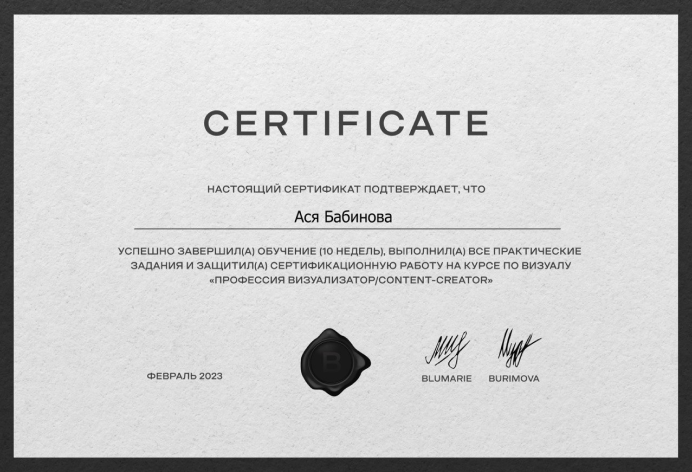
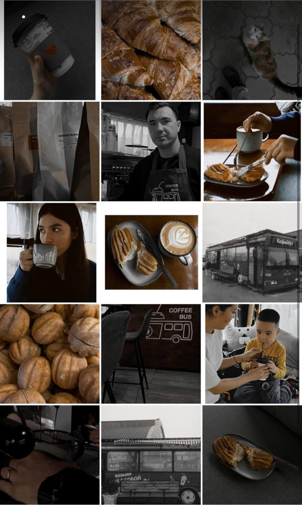

ОБО МНЕ:
Здравствуйте, меня зовут Ася Бабинова.
Я рисую с тех пор, как научилась держать карандаш в руке, поэтому моя жизнь навсегда связана с творчеством.
А так как у меня была мечта: научиться создавать искусство на фотографии - я выучилась на визуализатора.
ЗАЧЕМ НУЖЕН ВИЗУАЛ:
Согласно исследованиям человек решает нравится ему что-то или нет за 3-5 секунд. Этим активно пользуются маркетологи. Вспомните сами как быстро заходя на новый аккаунт вы решаете оставаться ли на нем. Поэтому визуал должен максимально передавать вашу индивидуальность, характер и ценности, чтобы привлечь как можно больше подписчиков (клиентов).
“Визуализатор — не фотограф, который просто создает эстетичный снимок. Визуализатор закладывает в него определенные смыслы о человеке или бренде, раскрывает характер и ценности.”
@burimova_school
МОИ РАБОТЫ:
 Визуал для @coffeebus_aktau выполненный в стиле минимализма и темной эстетики.
Отражающий атмосферу гостеприимства и заботы о клиентах, а также передающий уникальность места.
УСЛУГИ:
Работа Визуализатора включает в себя:
-Распаковку личности или бренда (бриффинг)
-Составление визуальной концепции (примера готового визуала)
-Составление мудборда по натроению и образу съемки
-Персональную съёмку
-Обработку фотографий
-Составление готового визуала